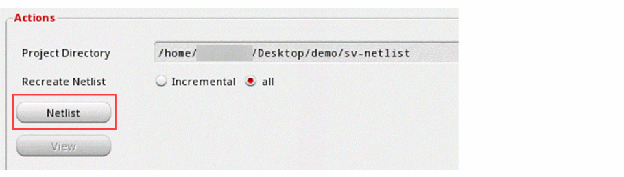

Generating and Regenerating a Netlist
To generate a netlist of a selected design:
-
After setting up options and variables for the selected design, click Netlist in the Actions group box of the SystemVerilog Netlister window.
SystemVerilog Netlister does the following:
-
In the Actions group box, select one of the following:
- Incremental: Netlists only the changes that you make to the design or the settings. In case of large designs, this mode of netlist generation highly improves the performance.
- All: Recreates the complete netlist. In case of large designs, this mode of netlist generation might decrease the performance.
Related Topics
SystemVerilog Netlister Graphical User Interface
Netlist Generation Flow in SystemVerilog Netlister
Return to top